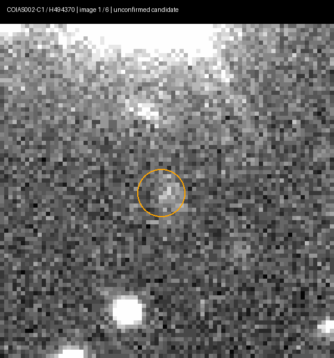
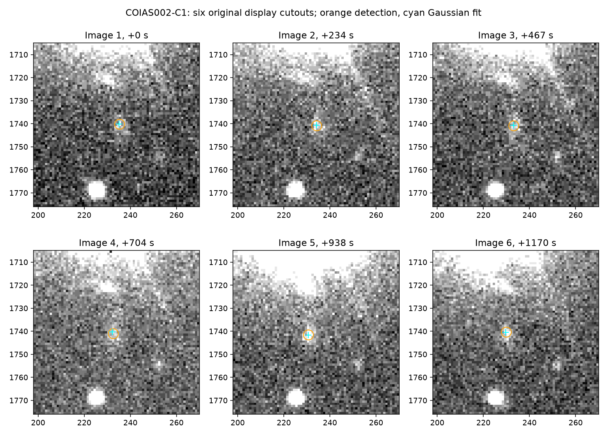
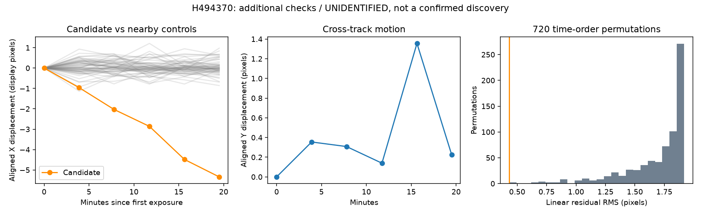

REAL IMAGE VALIDATION
未同定候補 H494370
新発見の確定ではありません。以前の探索で検出した候補の追加検証です。
観測画像と測定
2016年8月1日 / すばるHSC / zバンド / 200秒露光×6枚 / 約19.5分。原FITSではなく、COIASで生成した表示PNGを解析しました。
最初のCOIAS測定位置：RA 14:48:13.86 / Dec +43:37:57.23（J2000）。これは2016年の位置で、現在の位置ではありません。H494370はCOIAS内部番号で、MPCの正式仮符号ではありません。


今回実行した追加点検
12入力画像のハッシュを確認。静止星によるアフィン補正後も約5.47表示画素の移動が残りました。直線残差RMSは0.43画素。近傍55静止対照の移動95パーセンタイルは0.74画素でした。
720通りの時刻順序検査で元の順序が最小残差。ただし選別後の条件付き検査であり、発見確率・信頼度スコアを表しません。静止対照にも選別条件があり、完全性の評価ではありません。

追加探索と現在の判断
以前の探索範囲外だった2〜4画素の低速移動を探索し、1予備検出を抽出しました。しかし表示画像の白飛び・欠損との接触があるため、報告可能な新候補には採用しませんでした。
以前のJPL/MPC CND照合で一致なしという記録がありますが、未公開記録、軌道の不確かさや照合制約があり、新発見の保証ではありません。今回は外部照合を繰り返していません。
原FITSの時刻と点像の確認、光学的偽像の除外、別夜の回収、COIAS運営側のレビューが残っています。公式報告は未送信です。常時探索やAIモデルの稼働はしていません。